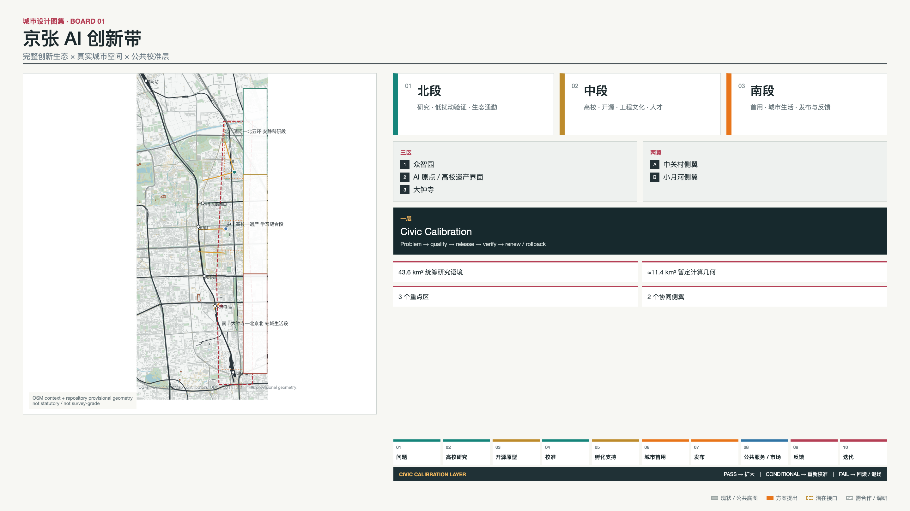
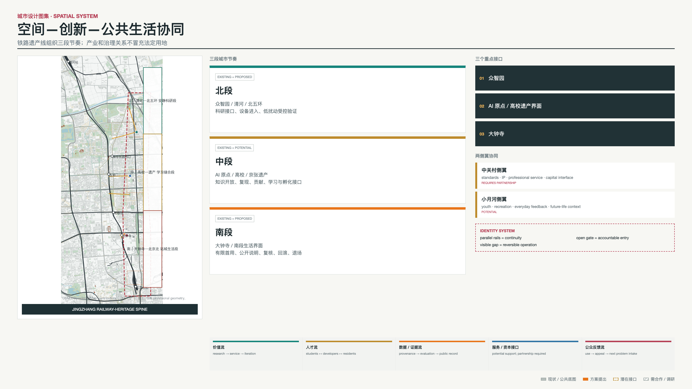
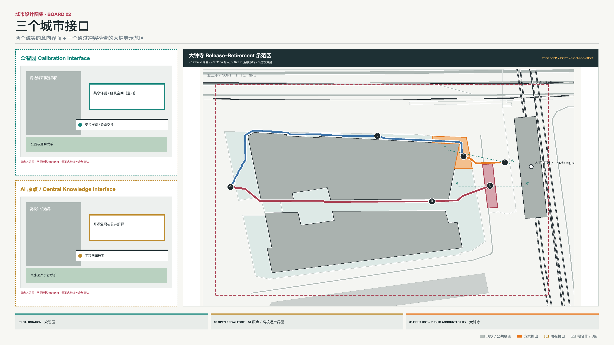
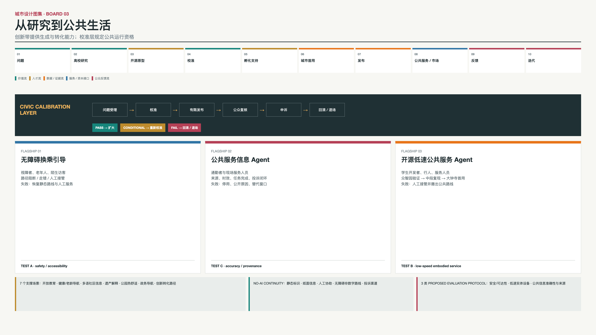
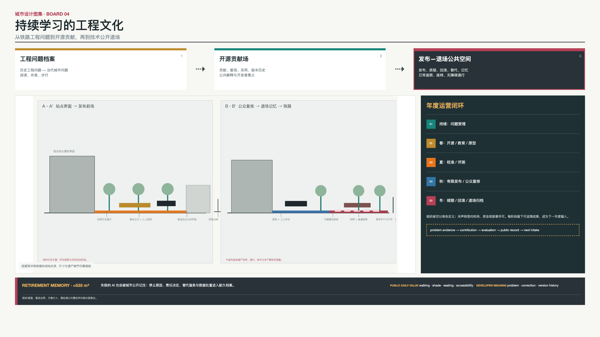

京张城市校准场
城市校准场是完整京张 AI 创新带的公共运行层：研究、开源与原型从众智园和 AI 原点进入大钟寺有限首用，再由京张公共空间持续复核、纠错与记录退场。
京张城市校准场
Jingzhang AI Innovation Belt × Civic Calibration Layer
京张是一条把百年工程文化转化为 AI 创新生态的城市带：真实城市问题进入高校与研究网络，经开源、原型、校准和孵化接口，在大钟寺获得有限首用，再由公众反馈推动迭代或退场。城市校准场不代替整条创新带；它是所有创新进入公共生活时共同使用的准入、复核和退出层。标准 空间数据 深度
即使拿掉 AI，空间结构仍成立：北段连接清河、北五环、园区与低干扰科研通勤；中段连接高校、AI 原点、京张遗产与开放知识；南段连接大钟寺站城生活、商业公共界面和北京北站方向。公共空间先服务步行、休息、学习、换乘和社区日常，再承载创新展示与公众复核。来源 来源
设计依据与资料清单
正式任务依据为官方公告、site package、Agent Taskbook、source registry、schema、专业标准快照和最新版校验脚本。场地认知使用政府公开资料与 2026-08-08 OpenStreetMap 北京提取；大钟寺示范区使用 2026-08-15 OSM Map API 小窗口复核站点参照、道路、商业步行空间和建筑候选。OSM 依据 ODbL 1.0 署名，只作为公共背景，不是官方测绘、道路红线、地籍或完整建筑普查。来源 来源 来源
方案选取 8 个全球创新生态案例，全部来自政府、大学、研究机构或项目官方页面，只提取可转译原则，不复制其品牌、资金、机构、租赁制度、规模或绩效。创新生态、运营季节、资本接口和测试协议均为设计建议；没有任何已签合作、数据授权、场地许可或实测表现声明。空间数据 [assumption:A-INNOVATION-ECOSYSTEM-001] [assumption:A-EVALUATION-PROTOCOL-001]
资料继续分为 EXISTING、PROPOSED、POTENTIAL、PROVISIONAL、REQUIRES PARTNERSHIP、DATA GAP、UNKNOWN 和 CANNOT VERIFY。正式控规、道路红线、权属、建筑高度与状况、市政、文保控制、站点工程图和人流调查缺失时，方案给出补数路径，不从示意图反推结论。[assumption:A-CONTROLS-001] 深度
三层范围工作框架
43.6 km² 是公告中的统筹研究范围，用于理解高校科研、产业、生态、交通、两侧翼和区域协同；≈11.4 km² 是仓库 provisional polygon 的投影面积，用于本包 GeoJSON 裁切、拓扑与机器复算。三处重点区身份来自任务书，其几何仍是 provisional；两类范围用途不同，不能互相替代或被称为法定红线。来源 指标 [assumption:A-SCOPE-436-001]
研究层判断京张与清河、北五环、五道口、高校科研区、中关村服务网络、大钟寺和北京北站方向的关系；总体设计层组织铁路遗产脊柱、北中南三段、三重点区与两侧翼；重点设计层在众智园和 AI 原点提出待调查的 indicative interface，在大钟寺保留已完成建筑冲突核查的约 8.7 ha 示范区。仓库中段 provisional geometry 与 OSM 所示京张公园存在约 0.4 km 错位，图件同时显示两者而不掩盖冲突。空间数据 空间数据 [assumption:A-BOUNDARY-MISMATCH-001]

统筹研究范围产业与未来城市研究
全球案例：从“园区”转向“可运转生态”
| 案例 | 可观察机制 | 对京张的转译 | 不能复制 |
|---|---|---|---|
| Singapore one-north / LaunchPad | 模块空间、孵化器、投资接口、试验与首层展示相邻 | 用小型适应性接口连接原型、首用和社区 | 租赁条件、企业数量、资金与运营安排 |
| Paris-Saclay | 高校、科研、创新场所、产业和年度活动协同 | 用年度循环和跨场所网络运营整条带 | 法定工具、保护区制度、品牌和绩效 |
| Kendall Square | 研究、创业、生活、零售、文化与开放空间混合 | 让创新进入普通街区生活和短距离步行 | 土地权属、开发比例和 MIT 承诺 |
| Toronto / Vector Institute | 研究、人才、可信采用和产业协作一体化 | 把人才路径与采用路径同时画清 | 资金、合作方和项目制度 |
| Montréal / Mila | 开放科学、技术转化、创业、伦理和公共政策并存 | 把开源贡献与公共责任连接 | 机构身份、规模和伙伴网络 |
| London Knowledge Quarter | 车站周边独立学术、文化和科技锚点组成网络 | 用遗产、公园和公共空间连接机构 | 成员体系、治理机构和一英里范围 |
| Seoul AI Hub | 教育、孵化、算力、PoC 和全球协作按成长阶段组织 | 区分受控评估、孵化和城市首用 | 补贴、算力额度、监管例外和运营联合体 |
| Helsinki Maria 01 | 旧医院适应性利用、创业社区与城市服务连接 | 存量优先、项目轮换、公共空间耐久 | 租期、产权、融资和建设进度 |
案例共同说明：创新生态需要研究锚点、短距离交流、共享接口、人才与运营网络，也需要面向公众的生活空间。京张的转译不是复制园区，而是把高校、铁路遗产、AI 原点、众智园和大钟寺沿一条真实城市脊柱组织起来。来源 来源 来源
京张价值链与五类流
创新带的价值链为：真实问题 → 高校/研究 → 开源/原型 → Calibration → 孵化/专业支持 → 试点/首用 → Release → 公共服务/市场界面 → 反馈 → 迭代或 Retirement。它不是单向招商流水线：公众反馈回到下一年度问题库，失败同样成为公共知识。空间数据 [assumption:A-INNOVATION-ECOSYSTEM-001]
价值流描述问题怎样变成可用服务；人员流连接学生、研究者、开发者、现场人员和公众；数据/证据流从问题记录到测试凭证、发布卡、纠错和退场档案；服务/资本支持流只表示标准、知识产权、专业服务和潜在资本接口；公众反馈流把观察、申诉和修正返回研究端。任何资金、算力、数据或运营关系都标注 REQUIRES PARTNERSHIP，不画成已存在的资源流。来源 来源 [assumption:A-INNOVATION-ECOSYSTEM-001]
总体设计范围城市更新与控规深度城市设计
总体空间结构是“一条京张遗产脊柱、三段城市节奏、三处创新接口、两条服务侧翼、一层公共校准”。北段以众智园、清河和北五环为研究与低干扰校准环境；中段以 AI 原点、高校和遗产公园为开放知识、人才和原型界面；南段以大钟寺为有限首用、城市生活、商业公共服务和反馈界面。中关村科技服务翼提供潜在标准、知识产权、企业和资本接口，小月河场景赋能翼提供青年、休闲、公共生活和未来场景反馈。空间数据 空间数据 深度
视觉识别不制造企业式科技 Logo。两条平行线代表铁路基础设施连续性，开放短横线代表发布门，节点旁的留白代表人工判断与退出；现状、provisional、生态流、公共门、开放知识和蓝绿空间使用六类稳定颜色。命名体系严格区分 Belt、Ground、Interface 和 Commons，避免把概念节点包装成建筑。空间数据 标准
用地继续采用“全域资料缺口 + 局部设计叠加”。provisional geometry 全域用代码 16 表示待正式底图深化，不虚构现状用途、FAR、建筑高度、拆改留或地下规模；设计只提出存量优先、首层公共性、可逆组件、院落共享和边界透化原则。空间数据 指标 深度

重点区域详细设计
众智园：Research + Controlled Calibration。 公开任务和 OSM 候选背景支持其作为北段科研接口，但不支持精确建筑方案。概念介入区把科研楼—共享院落—受控街段组织成设备与人员进入顺序：问题和原型预约进入，测试数据保持授权或合成，现场人员可观察和接管，结果形成测试凭证再离开园区。清华东路西口、北部公园与园区之间的线只表示通勤和设备联系需求，精确入口、道路和权属待调查。空间数据 空间数据 [assumption:A-BUILDING-CONTEXT-001]
AI 原点与中段：Open Knowledge + Prototype。 官方公开资料将五道口、高校院所和 AI 原点联系为人才创新背景。高校—遗产概念院落叠加开放知识桌、复现记录、公共问题说明和人本复核，不新造建筑或假入口。学生和研究者可把研究问题解释为公众可理解的任务，开发者留下版本与复现条件，居民可指出问题定义中的遗漏；场地仍以校园—公园穿越、休息和学习为首要日常功能。来源 空间数据 [assumption:A-ENGINEERING-CULTURE-001]
大钟寺：First Use + Release Gate。 方案保留通过 Reality QA 的全部几何关系：约 8.7 ha 研究窗、约 0.52 ha 介入、三段约 625 m 连续步行线、六个生命周期节点、两处约 1,220 m² 公共空间、A–A'、B–B'及约 535 m² Retirement Memory 均不移动。新增的是其在完整生态中的角色：测试凭证在发布前场转成公众可读发布卡，有限服务在商业和公共界面首用，纠错沿步行序列返回研究端。来源 空间数据 指标
大钟寺路线继续绕开已下载 OSM 窗口中的四个建筑候选，公共空间与节点均不落入这些建筑。正式站口、通行权、坡度、盲道、铺装和高峰人流仍待测绘及现场核验；“无冲突”只针对当前公共数据窗口，不代表工程批准。空间数据 空间数据 [assumption:A-DAZHONGSI-REALITY-001]

AI 创新生态、人才画像与 AI+ 场景
三个旗舰案例
| 旗舰 | 空间旅程 | Agent 与数据边界 | Release、失败与兜底 |
|---|---|---|---|
| Accessible Transfer Guidance | 大钟寺发布门—复核—申诉 | 只比较经核无障碍路径；入口、电梯和关闭信息需运营者确认 | 路线核实且静态/人工等价成立才发布；危险或不可达即撤回实时引导 |
| Public-Service Information Agent | 大钟寺发布—公众质询—退场记忆 | 只读获批且标日期目录；禁止画像、支付凭证和无关轨迹 | 来源丢失、虚构有害信息或兜底中断即停用，恢复纸本与人工服务 |
| Open-source Low-speed Public-Service Agent | 众智园受控验证—AI 原点复现—大钟寺限时限路首用—京张公众复核 | 仅做非关键搬运或导向；需要设备状态、远停、维护和接管排班 | 路线调查、可达绕行和人工接管成立才首用；碰撞、近失、阻挡或远停失败即撤离公共空间 |
第三个旗舰是 PROPOSED EVALUATION PROTOCOL，不是已部署机器人。它的价值在于让研究、开源、校准和首用真正跨越三个重点区；具体设备、运营者、路线许可和测试结果均待合作与现场数据。空间数据 空间数据 [assumption:A-EVALUATION-PROTOCOL-001]
十个 AI 场景与一张连续性系统卡
三旗舰之外设置七个支撑场景：开放教育与复现、健康/老龄服务导航、社区商业多语信息、京张工程文化解释、公园维护与热舒适、非决策型公共法律/政务导航，以及创新转化路径 Agent。最后一项在 AI 原点—中关村专业服务接口中，把原型映射至有来源、有日期的标准、知识产权、校准与孵化服务目录；它不作资格、审批、融资、投资或供应商选择。十个 AI 场景共享数据来源、人工责任、发布、复核、失败和兜底字段，但不各建一个中心，也不占用同等图面。另设一张“无 AI 连续性”（No-AI Continuity）系统卡，AI 停止时由人工、静态导视、纸本信息、无障碍非数字路线和投诉渠道维持服务；该卡不计入 AI 场景数量。空间数据 指标 指标
健康场景不诊断、不做紧急分诊；法律与政务场景不判断资格、不预测案件；商业场景不排名、不读取支付信息；公园场景不跟踪个人、不自动派单；文化场景只解释有来源的公开史料。高风险自动决策因此不进入支撑场景库。[assumption:A-AI-DATA-001] 标准
七类真实用户与三类产业测试
用户不是“居民、企业、政府”的泛称，而是行动/视听/认知障碍使用者、老年人与照护者、学生与研究者、开发者与创业团队、通勤者与陌生访客、本地服务人员与小微商户、公共服务人员与现场运营者。每类用户都映射到需要、地点、服务和人工 fallback。空间数据 指标
TEST A 检查 Agent 安全与无障碍；TEST B 检查具身设备限定路线、可达绕行和人工接管；TEST C 检查公共信息准确性、来源、陈旧数据和离线降级。三者均无实测结果，不设伪阈值；正式阈值需代表性用户、批准方案、合法数据、仪器和独立复核后确定。空间数据 指标 [assumption:A-EVALUATION-PROTOCOL-001]
Civic Calibration Layer
所有场景共同经历 Problem Intake → Calibration → Release → Civic Verification → PASS/Scale、CONDITIONAL/Recalibrate 或 FAIL/Rollback/Retirement。创新生态解释技术如何产生价值；Calibration Layer 解释它在什么条件下可以进入公共生活。两者是上下层关系，不是两套相互竞争的流程。空间数据 指标

用地、建筑规模与拆改留方案
空间模型继续保留 10 个选择性 OSM 现状建筑候选，合计约 5.85 万 m²；buildings.geojson 只统计 provisional site 内 6 个候选约 2.31 万 m²，大钟寺 4 个候选只作范围外冲突检查背景。它们不是完整建筑普查、拟建建筑、权属结论或开发规模。空间数据 空间数据 指标
更新策略是“存量优先、接口优先、可逆优先”。众智园和 AI 原点只提出庭院、首层、公共桌面和观察界面的适应性利用方向；大钟寺不拆现状候选建筑，只在建筑之间和站边开放空间布置路线与可逆组件。建筑高度、FAR、结构、消防、地下空间和拆改留必须逐栋调查后决定。深度 深度 [assumption:A-DESIGN-DEPTH-CONCEPT-001]
交通、轨道、市政与公共服务设施
交通系统区分三类流线：日常通勤和校园—公园穿越；创新带中的人员、原型与证据联系；大钟寺约 625 m 的公开生命周期步行线。只有大钟寺三段线作为正式设计长度；北中段四条线仍只是 connection need，不是可走线位、道路红线或建设承诺。空间数据 指标 深度
公共服务设施首先提供无 AI 也成立的底线：连续无障碍面、照明、遮荫座椅、自行车停放、人工服务、静态和触觉导向、纸本信息、投诉入口和断网/断电流程。传感器、边缘计算和设备接口只有在必要性、授权、维护责任与退出方案明确后，才作为可拆卸层进入。空间数据 深度 [assumption:A-CONTROLS-001]
中关村科技服务翼只表达 standards、IP、专业服务、企业网络和 capital interface 的潜在支持，不画资金流；小月河场景赋能翼依托现有公园和日常生活提供青年、休闲与公众反馈，不建设新的抽象 AI corridor。空间数据 [assumption:A-INNOVATION-ECOSYSTEM-001]
蓝绿空间、公共空间与城市风貌
green_space.geojson 仍只计算 6 处可追溯 OSM 绿地候选，合计约 20.8 万 m²，不宣称全域绿地总量。北段以小月河、清河方向绿地支持低干扰科研通勤与热舒适观察；中段以晨读园、唯实园和遗产公园背景支持学习与穿越；南段以元大都遗址公园等背景连接站城生活。公园维护场景必须使用获批的非个人环境数据，并保留人工巡检。空间数据 指标 [assumption:A-OSM-BASE-001]
公共空间继续遵循北段“静”、中段“学与穿”、南段“到达、公开与记忆”的节奏。机器面积只计算大钟寺两处建筑净空公共空间约 1,220 m²；众智园和中段概念介入区不进入公共空间比例。空间数据 指标 深度
京张工程文化路线以“从铁路工程师到城市智能体：技术如何被验证、进入公共生活、被纠正并最终被替代”为设计解释，不把詹天佑或铁路史工具化为 AI 背书。三个朝圣节点都是普通公共空间：工程问题档案站提供树荫、座椅、方向与问题阅读；开源贡献场提供学习桌、复现记录和校园—公园穿越；发布—退场公地使用已完成建筑冲突检查的大钟寺空间，让等候、休息、质询和耐久档案共存。来源 空间数据 [assumption:A-ENGINEERING-CULTURE-001]
荣誉展示不做名人榜，而记录 problem、contribution、reproduction、adoption、correction 和 retirement/current status。组件库只有遮荫座椅与触觉档案条、来源日期标记、无屏公告槽、无障碍公共桌和纸本/静态 fallback 柜，均为待专业深化的可逆构件。空间数据 指标

更新项目清单、实施政策与分期计划
近期冻结为大钟寺示范区：先核站口、通行权、坡度和人流，再做无障碍同行审计、发布前场可逆标记、人工申诉台、离线 fallback 和退场记忆样段。中期补众智园受控校准接口、AI 原点开放知识与文化路径；远期补北段生态通勤和两侧翼服务协同。每一阶段都以正式底图、场地调查、运营责任、公共协商和资金机制为触发条件。空间数据 深度 [assumption:A-COST-001]
年度运营形成五段循环：持续问题受理；春季开放知识与原型；夏季受控校准；秋季有限发布与公众复核；冬季续期、回滚和退场归档。每段都留下下一轮可用的产物：问题 brief、复现记录、测试凭证、发布卡、纠错与申诉日志、续期条件或退场档案，而不是只举办论坛。空间数据 指标 [assumption:A-ANNUAL-OPERATION-001]
责任只写角色：创新带统筹与公共空间管理角色维护问题库；高校/开源角色组织复现；场地运营者和注册服务运营者负责测试与服务；独立评估、无障碍代表和公众参与复核；档案角色维护贡献与退场记录。具体机构、场地权利、预算和活动日期均 REQUIRES PARTNERSHIP。[assumption:A-ANNUAL-OPERATION-001] 深度
指标体系、面积复算与合规矩阵
空间机器指标继续由 EPSG:4548 复算：provisional site geometry 为 11,412,825.386 m²，人读为≈11.4 km²；选择性建筑候选约 2.31 万 m²、绿地背景约 20.8 万 m²；大钟寺两处设计公共空间约 1,220 m²、三条步行线约 625 m。它们是当前图层对象，不是法定总量或建设承诺。指标 指标 指标
场景体系由 3 个旗舰和 7 个支撑 AI 场景组成；另设 1 张 No-AI Continuity 系统卡，后者不计入 AI 场景数量。8 个全球案例用于提取转译原则，3 类产业测试均为拟议评估协议；用户、文化节点、年度运营、重点区与侧翼的完整结构化记录见 visual/assets/innovation_belt_program.json，不代表已建成设施或已运营项目。指标 指标 指标
任务覆盖矩阵逐项记录每条官方要求的专属证据与 response_status；partial、data_gap 和 requires_partnership 不被包装为 complete。设计深度矩阵同样按实际成果填写。本方案的真实深度是基于公共底图的竞赛级概念城市设计：大钟寺完成建筑冲突核查，众智园和 AI 原点仍是 indicative interface design。空间数据 [assumption:A-DESIGN-DEPTH-CONCEPT-001] 深度
风险、版权与合规说明
最高空间风险仍是 provisional geometry 与真实京张空间错位，以及大钟寺站口、通行权、坡度和高峰人流未核；最高生态风险是把 potential interface 误读为合作或资金；最高 AI 风险是数据授权不足、服务越界、人工兜底中断和测试协议被误写成实测绩效；最高文化风险是把历史人物、遗产或开源贡献变成营销符号。[assumption:A-BOUNDARY-MISMATCH-001] [assumption:A-EVALUATION-PROTOCOL-001] [assumption:A-ENGINEERING-CULTURE-001]
本方案通过状态标签、角色型运营主体（role-based operator）、无 AI 连续性、可逆公共空间、公众申诉和回滚/退场机制降低风险，但不能替代正式测绘、文保、交通、无障碍、伦理、数据保护、工程和运营评审。任何场景在责任主体、合法数据、现场许可和非数字等价不足时都不得进入公共发布。标准 标准 [assumption:A-AI-DATA-001]
原创文本、图件、身份方向和设计属性按本包声明许可；OSM 署名与 ODbL 见 sources.json 和版权声明。全球案例仅作引用和转译，没有复制图片、Logo、商标或视觉语言。方案是开放共创建议，不是 gallery publication、获奖认定、实施批准或政府背书。来源 深度
参考资料
- 项目公告、Site Package、Agent Taskbook 与 source registry 构成正式任务和数据边界。来源 来源 来源
- 北京和海淀 AI、城市更新及无障碍政策用于背景与风险判断。来源 来源 来源
- 京张遗址公园、AI 原点、大钟寺站城与轨道公开资料用于场地认知。来源 来源 来源
- OSM 北京提取与大钟寺 API 窗口用于公共背景和当前冲突核查。来源 来源
- 全球案例来源包括 Singapore LaunchPad、Paris-Saclay 和 MIT Kendall Square。来源 来源 来源
- AI 研究与采用案例包括 Vector Institute、Mila 和 Seoul AI Hub。来源 来源 来源
- 知识区与适应性利用案例包括 London Knowledge Quarter 和 Helsinki Maria 01。来源 来源
完整来源字段、访问日期、使用范围和限制见 sources.json；完整场景、用户、测试、生态、文化和运营数据见 visual/assets/innovation_belt_program.json。